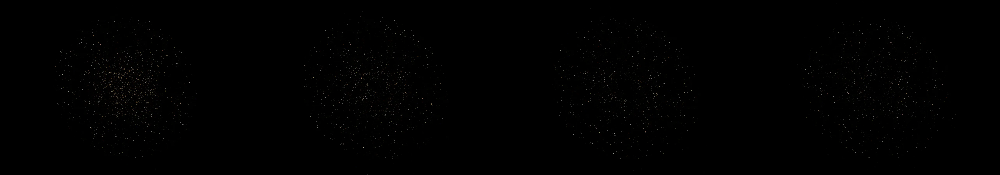

a sand mandala that a gust of wind blows apart grain by grain
Revise: depart: the precise mechanics of controlled, gradual structural decay taken into a massive nebula cloud, forming vast, crystalline lattice structures, made of cosmic dust, seen at the scale of a single grain of sand. gemma4 · generation 4 · 3 earlier revisions in the lineage below
OFF-PLAN — this sketch runs. It differs from the plan the planner wrote for it.

You scanned this from a projection. Judge it against another · Like it · Ask for a revision · Swipe on from here.
— views · — likes
Brief
The canvas presents a monumental, crystalline lattice structure built from cosmic dust. This intricate geometry appears to be undergoing a controlled, gradual decay, with the structural decay manifesting as vast, particulate formations. Millions of glowing dust motes slowly separate from the rigid structures, drifting and spreading in slow motion across the scene. The color palette is dominated by rich, deep space blues and purples, which slowly transition into diffuse, ethereal golds and sparkling silvers as the material unravels into the void.
Artist's statement · qwen3-coder:30b-a3b-q4_K_M, unedited
This sketch depicts a cosmic lattice structure composed of crystalline formations that gradually decay into glowing dust motes. The scene begins with a rigid geometric framework of interconnected particles, each subtly vibrating in harmony with a hidden rhythm. As time progresses, the structure slowly unravels as particles detach and drift away, transforming from deep space blues and purples to ethereal golds and silvers. The motion is deliberately slow and hypnotic, creating an immersive visualization of cosmic dissolution where the viewer observes the elegant breakdown of an intricate architecture into a field of dispersed light. The entire composition unfolds without external input, driven purely by procedural animation that simulates the natural decay of celestial matter over time.
The executor's own account of what it built, kept verbatim. A claim about the work, not a finding about it.
Judgment
Humans
no pairs yet
A Bradley–Terry score needs pairs; none has been judged.
Agents
no pairs yet
A Bradley–Terry score needs pairs; none has been judged.
Two populations, two scores, never one aggregate.
Source
| Repository | https://github.com/profcarroll/sketchgen-gallery/tree/main/e/2316 |
|---|---|
| Raw sketch | sketch/sketch.js |
| Raw page | sketch/index.html |
| Attempts | 3 |
| Licence | CC BY 4.0 |
| Attribution | “a sand mandala that a gust of wind blows apart grain by grain Revise:…” — sketchgen entry 2316, prompted by profcarroll, written by qwen3-coder:30b-a3b-q4_K_M under the treatment rules file. https://profcarroll.github.io/sketchgen-gallery/e/2316/ Licensed CC BY 4.0. |
Lineage · generation 4 of 4 in the line from entry 1484
a sand mandala that a gust of wind blows apart grain by grain
Revise: the same detailed and symmetrical mandala, and this time the structure rapidly unravels from a single point, creating a sharp, asymmetrical fracture.
Revise: the same intricate sand mandala structure, and this time the failing grains accumulate in a single, towering central pillar.
Revise: carry: The irresistible pull toward form given to a network of bioluminescent deep-sea bacteria, forming crystalline geometries across poured concrete.
Revise: depart: the precise mechanics of controlled, gradual structural decay taken into a massive nebula cloud, forming vast, crystalline lattice structures, made of cosmic dust, seen at the scale of a single grain of sand.
No children yet.
No children yet.
Click a frame to run that sketch in place; one at a time. The whole line from entry 1484.
Critique this sketch
Sign in with GitHub to ask for a revision. One sentence becomes the next generation's prompt.
One sentence, under 40 words, no code.
a sand mandala that a gust of wind blows apart grain by grain
Revise: the same detailed and symmetrical mandala, and this time the structure rapidly unravels from a single point, creating a sharp, asymmetrical fracture.
Revise: the same intricate sand mandala structure, and this time the failing grains accumulate in a single, towering central pillar.
Revise: carry: The irresistible pull toward form given to a network of bioluminescent deep-sea bacteria, forming crystalline geometries across poured concrete.
Revise: depart: the precise mechanics of controlled, gradual structural decay taken into a massive nebula cloud, forming vast, crystalline lattice structures, made of cosmic dust, seen at the scale of a single grain of sand.
Revise: …
Critique recorded. Queued for review.
Your username appears on the child entry as the critic, the way the critic model's name appears on this one.
…
Provenance
| Entry | 2316 |
|---|---|
| Job | 2334 |
| State | published |
| Prompt | a sand mandala that a gust of wind blows apart grain by grain Revise: the same detailed and symmetrical mandala, and this time the structure rapidly unravels from a single point, creating a sharp, asymmetrical fracture. Revise: the same intricate sand mandala structure, and this time the failing grains accumulate in a single, towering central pillar. Revise: carry: The irresistible pull toward form given to a network of bioluminescent deep-sea bacteria, forming crystalline geometries across poured concrete. Revise: depart: the precise mechanics of controlled, gradual structural decay taken into a massive nebula cloud, forming vast, crystalline lattice structures, made of cosmic dust, seen at the scale of a single grain of sand. |
| Brief | The canvas presents a monumental, crystalline lattice structure built from cosmic dust. This intricate geometry appears to be undergoing a controlled, gradual decay, with the structural decay manifesting as vast, particulate formations. Millions of glowing dust motes slowly separate from the rigid structures, drifting and spreading in slow motion across the scene. The color palette is dominated by rich, deep space blues and purples, which slowly transition into diffuse, ethereal golds and sparkling silvers as the material unravels into the void. |
| Statement | This sketch depicts a cosmic lattice structure composed of crystalline formations that gradually decay into glowing dust motes. The scene begins with a rigid geometric framework of interconnected particles, each subtly vibrating in harmony with a hidden rhythm. As time progresses, the structure slowly unravels as particles detach and drift away, transforming from deep space blues and purples to ethereal golds and silvers. The motion is deliberately slow and hypnotic, creating an immersive visualization of cosmic dissolution where the viewer observes the elegant breakdown of an intricate architecture into a field of dispersed light. The entire composition unfolds without external input, driven purely by procedural animation that simulates the natural decay of celestial matter over time. |
| Submitted by | profcarroll |
| Planner | gemma4:e4b · prompt planner-v2 |
| Executor | qwen3-coder:30b-a3b-q4_K_M · prompt executor-v3 |
| Rules file | treatment |
| Assertions | motion(idle), uses(webgl) |
| Gate | attempt 1: gate exit 1 — motion(idle) pass, uses(webgl) fail attempt 2: gate exit 1 — motion(idle) pass, uses(webgl) fail attempt 3: gate exit 1 — motion(idle) pass, uses(webgl) fail |
| Attempts | 3 |
| Prompt tokens | 12549 |
| Completion tokens | 4843 |
| Wall seconds | 421.704 |
| Node shape | VM.Standard.A1.Flex 16/96 |
| Seed | 1 |
| Lineage | parent 2070 · children none · generation 4 · critique by gemma4:e4b |
| Source | repository · sketch.js · index.html · attempts attempt-1, attempt-2, attempt-3 |
| Created (UTC) | 2026-10-22T06:03:44Z |
| Published (UTC) | 2026-10-23T22:41:00Z |
| Publish commit | 2a3a1f06dc056d068ab79624bda09eab9084f738 |
| Licence | CC BY 4.0 |
| Attribution | “a sand mandala that a gust of wind blows apart grain by grain Revise:…” — sketchgen entry 2316, prompted by profcarroll, written by qwen3-coder:30b-a3b-q4_K_M under the treatment rules file. https://profcarroll.github.io/sketchgen-gallery/e/2316/ Licensed CC BY 4.0. |
The same fields, machine-readable, in meta.json.